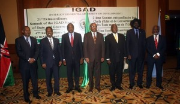

khatumo.net archive
COMMUNIQUE OF THE 21ST EXTRAORDINARY SUMMIT OF HEADS OF STATE AND GOVERNMENT OF IGAD
Published without a byline
May 25, 2013

IGAD heads of State
The IGAD Heads of State and Government held its 21stExtraordinary summit in Addis Ababa, Ethiopia on 3 May 2013, under the Chairmanship of H.E Mr. Hailemariam Desalegn, the Prime Minister of the Federal Democratic Republic of Ethiopia and current Chairperson of the IGAD Assembly to discuss the political situation in the Federal Republic of Somalia.
The Assembly was attended by H. E. Uhuru Kenyatta, President of the Republic of Kenya; H.E. Hassan Sheikh Mohamud, President of the Federal Republic of Somalia, H.E. SalvaKiir Mayardit, President of the Republic of South Sudan; H. E. Yoweri Kaguta Museveni, President of the Republic of Uganda; H.E. Ali Ahmed Kharti, Minister for Foreign Affairs of the Republic of The Sudan; and H.E. Ahmed Ali Silay, Minister of International Cooperation the Republic of Djibouti.
The Assembly was preceded by the 47th Extra-ordinary Session of IGAD Council of Ministers held on 2 May 2013, in Addis Ababa, Ethiopia.
The Assembly conveyed its congratulations to the Republic of Djibouti and the Republic of Kenya on the conduct of peaceful and democratic elections. The Assembly also congratulated H.E Uhuru Kenyatta President of the Republic of Kenya on his assumption of office and welcomed him to the summit. The Assembly further welcomed H.E. Hassan Sheikh Mohamud, President of the Federal Republic of Somalia to the summit.
The Summit received a report from the chairperson of the IGAD Council of Ministers H.E Dr. Tedros Adhanom Minster of Foreign Affairs of the Federal Democratic Republic of Ethiopia and a briefing from H.E Amb.(Eng.)Mahboub M. Maalim, Executive Secretary of IGAD on the situation in the Federal Republic of Somalia. After deliberations, the Assembly:
1. Noted with appreciation the efforts made by the Government of Federal Republic of Somalia and the positive developments in recent months;
2. Commended the ongoing and significant engagements of the Somali Federal Government with the Somali regions in relation to the set up of regional administration structures;
3. Condemned the recent escalation of violence against civilians in Mogadishu and condemned all spoilers;
4. Noted with appreciation the increased engagement, convergence of ideas and solidarity among IGAD member states in support of Somalia. In this regard, noted with appreciation the meeting between H.E. Uhuru Kenyatta, the President of Kenya, and H.E. Hassan Sheikh Mohamud, President of the Federal Republic of Somalia of April 27th 2013 in Mombasa, Kenya and welcomed the joint statement of understanding which elaborates principles of engagement. In this regard, urgedfor its full implementation;
5. Appreciated the efforts made by the Ethiopian Prime Minister H.E Mr. Hailemariam Desalegn, in his capacity as IGAD Chair, in facilitating these engagements;
6. Noted with appreciation and welcomed the Somali Federal government’s document titled National Stabilization Plan and reiterated the need for all processes particularly the ongoing efforts towards setting up Somali regional administration and stabilization efforts, to be anchored on the following principles:
- Leadership of the government of the Federal Republic of Somalia in the process;
- Respect of the provisional constitution of the Federal Republic of Somalia;
- All inclusive consultative process with the peoples of Somalia;
- supportive role of IGAD based on the priorities of the Somali government; and
- Fighting the Al Shabab as the primary focus of the Somali Federal government; AMISOM; regional and international partners;
And further requested the Somali federal government to align the document with the aforementioned agreed five principles.
7. Reiterated the ownership of the Somali federal government to lead and set the priorities for its stabilization and reconstruction in an all-inclusive manner;
8. Stressed the need for these processes to include a framework for sustainable and gradual return programme for refugees with the active participation of the Somalis in the Diaspora and in this regard called on UNHCR and the international community to develop modalities for safe and orderly return and resettlement of Somali refugees with definite timelines;
9. Called for a commitment by all stakeholders to support the ongoing political outreach and reconciliation processes led by the Somali Federal government, and the building of the capacity of the Federal Government of Somalia particularly on governance, economic development and security sector reform;
10. Decided to conduct a confidence-building mission to Kismayu led by the IGAD Executive Secretary and composed of representatives of the federal government of Somalia and one senior delegate from each member state of IGAD with the aim of assessing the situation and submitting a report to the IGAD summit to be held on the sidelines of the upcoming AU summit in May 2013;
11. Underlined the speedy implementation of the Integration of Forces Plan including the enrolment and training of young officers and NCOs; and underscored the need for coordinated efforts of all stakeholders under the leadership of the Somali government;
12. Noted with appreciation the continued commitment of the AMISOM forces, the courage and commitment of the Somali National Security Forces, and the support by all troops/ police contributing countries (Burundi, Djibouti, Kenya, Nigeria, Sierra Leone and Uganda) as well as Ethiopia;
13. Appealed to the troop contributing countries/ police contributing countries and the Somali National Force to expand their operations and immediately recover the remaining areas controlled by Al Shabab;
14. Reaffirmed the strong solidarity among IGAD members and their commitment to continue supporting the government-led reforms in the various priority areas, and in light of upcoming International Conferences on Somalia in particular the London conference to be held on 7 May 2013, appealed to the international community to redouble their support to the stabilization, reconstruction and long-term development of Somalia, on the basis of interalia the principles referred to in paragraph 6;
15. Noted UNSC Resolution 2093 and expressed the hope that it will enhance the reconstruction efforts and the role of Somalia in the region; that it will build on progress made by AMISOM operations, and that it will form a sound basis for the reconstruction and development of Somalia;
16. Underlined that the fight against Al Shabab remains the primary concern in ensuring Somalia’s stabilization and reconstruction;
Done in Addis Ababa, Ethiopia on 3 May, 2013